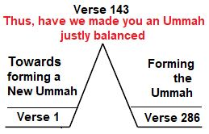

Words are energies. A set of correctly designed words may function like a software program of a computer. If applied to a nafs through meditation and repeated chanting, it may mold the nafs to have certain abilities. However, it is obvious that such modification harms the nafs (soul), which is designed to act within a human body and develop over time. [The matters will be clear subsequently in this Tafsir after I will discuss the jinn deliberately in Section 3 of Chapter-7, and human soul (nafs) in Section 10 of chapter 6.]
শব্দ শক্তি। সঠিকভাবে ডিজাইন করা শব্দের একটি সেট কম্পিউটারের একটি সফ্টওয়্যার প্রোগ্রামের মতো কাজ করতে পারে। ধ্যান এবং বারবার জপ করার মাধ্যমে যদি একটি নফসে প্রয়োগ করা হয়, তাহলে এটি নফসকে নির্দিষ্ট ক্ষমতার ছাঁচে ফেলতে পারে। যাইহোক, এটা সুস্পষ্ট যে এই ধরনের পরিবর্তন নফস (আত্মা) এর ক্ষতি করে, যা মানবদেহের মধ্যে কাজ করার জন্য এবং সময়ের সাথে সাথে বিকাশ করার জন্য ডিজাইন করা হয়েছে। [আমি অধ্যায়-7-এর ধারা 3-এ ইচ্ছাকৃতভাবে জিন এবং 6-এর অধ্যায়ের 10-এ মানব আত্মা (নফস) নিয়ে আলোচনা করার পরে এই তাফসিরে বিষয়গুলি পরিষ্কার হবে।]
4. Time
4. সময়
It is said that Harut and Marut descended to Earth during the time of Idris. Idris lived before Noah, so the event occurred about six thousand years ago. Most likely, the battle of Mahabharata took place during this time. The similarities between Yudhishthira of the Mahabharata and Prophet Idris of the Quran are remarkable. Yudhishthira is famous for his truthfulness and was lifted to the sky. Similarly, Idris was a man of truth and was also lifted to the sky:
কথিত আছে ইদ্রিসের সময় হারুত ও মারুত পৃথিবীতে অবতরণ করেছিলেন। ইদ্রিস নূহের আগে বেঁচে ছিলেন, তাই ঘটনাটি প্রায় ছয় হাজার বছর আগে ঘটেছে। সম্ভবত এই সময়ে মহাভারতের যুদ্ধ সংঘটিত হয়েছিল। মহাভারতের যুধিষ্ঠির এবং কুরআনের নবী ইদ্রিসের মধ্যে সাদৃশ্য লক্ষণীয়। যুধিষ্ঠির তার সত্যবাদিতার জন্য বিখ্যাত এবং তাকে আকাশে তোলা হয়েছিল। একইভাবে, ইদ্রিস একজন সত্যবাদী এবং আকাশে উঠানো হয়েছিল:
―Also mention in the Book the case of Idris: He was a man of truth, a prophet. And We raised him to lofty station‖ [Al Quran 19:56-59]
এছাড়াও কিতাবে ইদ্রিসের ঘটনা উল্লেখ করুনঃ তিনি ছিলেন একজন সত্যবাদী, একজন নবী। এবং আমরা তাকে উচ্চ মর্যাদায় উন্নীত করেছি” [আল কুরআন 19:56-59]
O you of Faith! Say not words of ambiguous import, but words of respect, and hearken; to those without Faith is a grievous punishment. It is never the wish of those without Faith among the People of the Book, nor of the Pagans that anything good should come down to you from your Lord. But Allah will choose for His Special Mercy whom He will; for Allah is Lord of grace abounding. None of Our revelations do We abrogate or cause to be forgotten but We substitute something better or similar. Know you not that Allah has power over all things? Know you not that to Allah belongs the dominion of the Skies and Lands, and besides Him you have neither patron nor helper? Would you question your Apostle as Moses was questioned before? But whoever changes from Faith to Unbelief has strayed without doubt from the Right Way. Quite a number of the People of the Book wish, they could turn you back to infidelity, after you have believed, out of selfish envy, after the Truth has become Manifest unto them. But forgive and overlook till Allah accomplishes His purpose; for Allah has power over all things. And establish salat and give zakah (pay for purification). And whatever good you send forth before you for your souls, you shall find it with Allah; for Allah sees well all that you do. And they say: "None shall enter Paradise unless he be a Jew or a Christian." Those are their wishful thinking. Say: "Produce your proof if you are truthful." Nay, whoever submits his face to Allah and is a doer of good (Muhsinun), he will get his reward with his Lord; on such shall be no fear, nor shall they grieve. The Jews say, "The Christians follow nothing,‖ and the Christians say, "The Jews follow nothing," yet they study the Book (Bible)—like unto their word said who know not—but Allah will judge between them in their quarrel on the Day of Judgment. And who is more unjust than he who forbids that in places for the worship of Allah His name should be celebrated—whose zeal is to ruin them? It was not fitting that such should themselves enter them except in fear. For them, there is nothing but disgrace in this world, and in the world to come an exceeding torment. To Allah belong the East and the West—whither so ever you turn, there is Allah's countenance; for Allah is All–Embracing, All–Knowing. They say: "Allah has begotten a son." Glory be to Him! Nay, to Him belongs all that is in the Skies and Lands; everything renders worship to Him. To Him is due the primal origin of the Skies and Lands; when He decrees a matter, He says to it: "Be," and it is. And those who have no knowledge say: ―Why does not Allah speak to us or why do not a sign come to us?‖ So said the people before them, words of similar import, their hearts are alike. We have indeed made clear the Signs unto any people who hold firmly to Faith. Verily, We have sent you in truth as a bearer of glad tidings and a Warner, but of you no question shall be asked of the Companions of the Blazing Fire. Never will the Jews or the Christians be satisfied with you unless you follow their form of religion. Say: "The Guidance of Allah—that is the Guidance." And if you were to follow their desires after what you have received of Knowledge, then you would have against Allah neither any protector, nor any helper. Those to whom We have sent the Book study it, as it should be studied; they are the ones that believe therein—those who reject faith therein, the loss is their own. O Children of Israel! Call to mind the special favor, which I bestowed upon you, and that I preferred you to all others. And guard yourselves against a Day when one soul shall not avail another, nor shall compensation be accepted from her, nor shall intercession profit her, nor shall anyone be helped.
হে ঈমানদারগণ! অস্পষ্ট আমদানির কথা বলবেন না, কিন্তু শ্রদ্ধার কথা বলুন এবং শুনুন; যারা অবিশ্বাসী তাদের জন্য রয়েছে যন্ত্রণাদায়ক শাস্তি। আহলে কিতাবদের মধ্যে অবিশ্বাসীদের এবং পৌত্তলিকদের কখনোই কামনা নয় যে, তোমার প্রতিপালকের পক্ষ থেকে তোমার কাছে ভালো কিছু নাযিল হোক। কিন্তু আল্লাহ যাকে ইচ্ছা তাঁর বিশেষ রহমতের জন্য বেছে নেবেন; কেননা আল্লাহ প্রভূত অনুগ্রহের মালিক। আমাদের কোন প্রত্যাদেশ আমরা রদ করি না বা বিস্মৃত হই না বরং আমরা এর থেকে ভালো বা অনুরূপ কিছু প্রতিস্থাপন করি। তুমি কি জানো না যে, আল্লাহ সর্ব বিষয়ে ক্ষমতাবান? তুমি কি জানো না যে, আসমান ও জমিনের রাজত্ব আল্লাহরই এবং তিনি ছাড়া তোমাদের কোন অভিভাবক বা সাহায্যকারী নেই? আপনি কি আপনার রসূলকে প্রশ্ন করবেন যেমন মুসাকে আগে প্রশ্ন করা হয়েছিল? কিন্তু যে ব্যক্তি ঈমান থেকে অবিশ্বাসে পরিবর্তিত হয় সে নিঃসন্দেহে সঠিক পথ থেকে বিচ্যুত হয়েছে। অনেক আহলে কিতাব চায়, তারা আপনাকে ঈমান আনার পর, স্বার্থপর হিংসা থেকে, তাদের কাছে সত্য প্রকাশ হয়ে যাওয়ার পর আপনাকে অবিশ্বাসের দিকে ফিরিয়ে দিতে পারে। কিন্তু ক্ষমা করুন এবং উপেক্ষা করুন যতক্ষণ না আল্লাহ তার উদ্দেশ্য পূরণ করেন। কারণ আল্লাহ সব কিছুর উপর ক্ষমতাবান। আর ছালাত কায়েম কর এবং যাকাত দাও। আর যা কিছু তোমরা তোমাদের আত্মার জন্য আগে প্রেরণ করবে, তোমরা তা আল্লাহর কাছে পাবে। কারণ তোমরা যা কর আল্লাহ তা দেখেন। এবং তারা বলে: "কেউ জান্নাতে প্রবেশ করবে না যদি সে ইহুদী বা খ্রিস্টান না হয়।" এগুলো তাদের ইচ্ছাপূর্ন চিন্তা। বলুনঃ যদি তোমরা সত্যবাদী হও তবে প্রমাণ পেশ কর। বরং, যে ব্যক্তি তার মুখ আল্লাহর কাছে নিবেদন করে এবং সে সৎকর্মশীল (মুহসিনুন), সে তার প্রতিপালকের কাছে তার প্রতিদান পাবে; তাদের কোন ভয় নেই এবং তারা দুঃখিত হবে না। ইহুদীরা বলে, "খ্রিস্টানরা কিছুই অনুসরণ করে না," এবং খ্রিস্টানরা বলে, "ইহুদিরা কিছুই অনুসরণ করে না," তবুও তারা কিতাব (বাইবেল) অধ্যয়ন করে - তাদের কথার মতো যারা জানে না - তবে বিচারের দিন তাদের মধ্যে তাদের ঝগড়ার বিচার আল্লাহ করবেন। তাদের জন্য ভয় ছাড়া আর কিছুই নেই, আর দুনিয়াতে আযাব হবে পূর্ব ও পশ্চিম যেদিকেই, সেখানেই আল্লাহ তায়ালা সব কিছু জানেন ভূমি; আকাশ ও ভূমির আদি উৎস তাঁর জন্য; তিনি বলেন: "হও" এবং যারা জ্ঞান রাখে না তারা বলে: "আল্লাহ আমাদের সাথে কথা বলেন না কেন?" নিশ্চয়ই আমরা আপনাকে সুসংবাদদাতা ও সতর্ককারী হিসেবে পাঠিয়েছি, কিন্তু ইহুদী ও খ্রিস্টানরা কখনোই আপনার প্রতি সন্তুষ্ট হবে না যদি না আপনি তাদের দ্বীনের অনুসরণ করেন, যদি তারা আল্লাহর নির্দেশ পেয়ে থাকে জ্ঞান, তাহলে তাদের কাছে কোন রক্ষক থাকবে না, যাদের কাছে আমরা কিতাব অধ্যয়ন করব, তারাই এতে বিশ্বাসী- যারা এতে বিশ্বাস করে না, তাদেরই ক্ষতি হবে, যেটি আমি তোমাদেরকে দিয়েছি এবং অন্যদেরকেও সেই দিন থেকে রক্ষা করব না অন্যের উপকার করবে, তার কাছ থেকে ক্ষতিপূরণ গ্রহণ করা হবে না, সুপারিশ তার লাভ হবে না এবং কাউকে সাহায্য করা হবে না।
The verses of this segment criticize the Jews extensively. However, they are also criticized in the Holy Bible. This is not new. Rather, it is a great honor that the Creator of the universes remembered them and found them suitable for criticism. Allah has used them as examples of both good and bad to teach the new ummah, ensuring they do not commit the same offenses. The segment justifies the formation of a new ummah in the Religion of Abraham. Segment 4 A New Ummah Created
এই অংশের আয়াতগুলো ব্যাপকভাবে ইহুদিদের সমালোচনা করে। তবে পবিত্র বাইবেলেও তাদের সমালোচনা করা হয়েছে। এটা নতুন নয়। বরং মহাবিশ্বের স্রষ্টা তাদের স্মরণ করেছেন এবং সমালোচনার উপযোগী পেয়েছেন এটাই বড় সম্মানের বিষয়। নতুন উম্মাহকে শিক্ষা দেওয়ার জন্য আল্লাহ তাদেরকে ভালো ও মন্দ উভয়ের উদাহরণ হিসেবে ব্যবহার করেছেন, নিশ্চিত করে যে তারা একই অপরাধ না করে। সেগমেন্টটি আব্রাহামের ধর্মে একটি নতুন উম্মাহ গঠনের ন্যায্যতা দেয়। সেগমেন্ট 4 একটি নতুন উম্মাহ তৈরি হয়েছে
In this segment, by dedicating a separate qiblah (direction of prayer), the followers of Prophet Muhammad (pbuh) are made a new ummah (community) in the religion of Abraham.
এই বিভাগে, একটি পৃথক কিবলা (প্রার্থনার দিকনির্দেশনা) উৎসর্গ করার মাধ্যমে, হযরত মুহাম্মদ (সাঃ) এর অনুসারীদেরকে ইব্রাহিমের ধর্মে একটি নতুন উম্মত (সম্প্রদায়) করা হয়।
And remember that Abraham was tried by his Lord with certain commands, which he fulfilled. He said: "I will make you an Imam to the nations." He pleaded: "And also from my offspring!" He answered: "But My promise is not within the reach of evil-doers." Remember We made the House (Kaaba) a place of assembly for men and a place of safety—and take you the station of Abraham as a place of prayer. And We covenanted with Abraham and Isma'il that they should sanctify My House for those who compass it round, or use it as a retreat, or bow, or prostrate themselves. And remember Abraham said: "My Lord, make this a City of Peace and feed its people with fruits—such of them as believe in Allah and the Last Day." He said: "(Yea), and such as reject Faith. For a while, I will grant them their pleasure but will soon drive them to the torment of Fire, an evil destination!" And remember, Abraham and Isma'il raised the foundations of the House: "Our Lord! Accept from us; for You are the All–Hearing, the All–Knowing.‖ "Our Lord! Make of us Muslims to Thy, and of our progeny a people Muslim to Thy, and show us our ways of worship and turn unto us; for You are the Oft–Returning, Most Merciful.‖ "Our Lord! Send among them an Apostle of their own who shall rehearse Thy Verses to them and instruct them in Scripture and Wisdom and sanctify them; for You are the Exalted in Might, the Wise." And, who turns away from the Religion of Abraham except him who befools himself? Truly, We chose him in this world, and verily in the Hereafter he will be among the righteous. Behold! His Lord said to him: "Bow". He said: "I bow to the Lord and Cherisher of the Universes."
এবং মনে রাখবেন যে ইব্রাহীমকে তার পালনকর্তা কিছু আদেশ দিয়ে পরীক্ষা করেছিলেন, যা তিনি পূরণ করেছিলেন। তিনি বললেনঃ আমি তোমাকে জাতিদের ইমাম বানাবো। তিনি আরজ করলেন: "এবং আমার বংশধর থেকেও!" তিনি উত্তর দিলেন: "কিন্তু আমার প্রতিশ্রুতি জালেমদের নাগালের মধ্যে নেই।" মনে রেখো আমি ঘরকে (কাবা) মানুষের জন্য সমাবেশের স্থান ও নিরাপত্তার স্থান বানিয়েছি-এবং ইব্রাহীমের স্থানকে প্রার্থনার স্থান হিসেবে গ্রহণ করেছি। এবং আমরা ইব্রাহীম ও ইসমাঈলের সাথে অঙ্গীকার করেছিলাম যে তারা আমার ঘরকে তাদের জন্য পবিত্র করবে যারা এটিকে প্রদক্ষিণ করে, বা এটিকে পিছু হটাতে বা রুকু বা সিজদা হিসাবে ব্যবহার করে। আর স্মরণ করুন ইব্রাহীম বলেছেন: "হে আমার পালনকর্তা, এটিকে শান্তির শহর করুন এবং এর লোকদেরকে ফল-ফলাদি দিয়ে খাওয়ান- তাদের মধ্যে যারা আল্লাহ ও শেষ দিনে বিশ্বাস করে।" তিনি বললেন: "(হ্যাঁ) এবং যারা বিশ্বাসকে প্রত্যাখ্যান করে। কিছু সময়ের জন্য, আমি তাদের আনন্দ দেব কিন্তু শীঘ্রই তাদেরকে আগুনের আযাবের দিকে নিয়ে যাব, যা একটি মন্দ গন্তব্য!" এবং মনে রাখবেন, আব্রাহাম এবং ইসমাঈল ঘরের ভিত্তি স্থাপন করেছিলেন: "আমাদের প্রভু! আমাদের কাছ থেকে কবুল করুন; কেননা আপনি সর্বশ্রোতা, সর্বজ্ঞ।" "আমাদের প্রভু! আমাদেরকে আপনার কাছে মুসলমান করুন এবং আমাদের বংশধরদেরকে আপনার কাছে মুসলিম করুন এবং আমাদের ইবাদতের পদ্ধতি দেখান এবং আমাদের দিকে ফিরে আসুন। কেননা তুমি প্রত্যাবর্তনকারী, পরম করুণাময়।" "হে আমাদের পালনকর্তা! তাদের মধ্যে তাদের মধ্য থেকে একজন রসূল পাঠান যে তাদের কাছে তোমার আয়াত পাঠ করবে এবং তাদেরকে কিতাব ও প্রজ্ঞার শিক্ষা দেবে এবং তাদের পবিত্র করবে; কেননা তুমি পরাক্রমশালী, প্রজ্ঞাময়।" আর ইব্রাহীমের দ্বীন থেকে আর কে বিমুখ হবে সে ছাড়া যে নিজেকে বোকা বানিয়েছে? নিশ্চয়ই আমরা তাকে দুনিয়াতে মনোনীত করেছি এবং পরকালে সে হবে সৎকর্মশীলদের অন্তর্ভুক্ত। দেখো! তার পালনকর্তা তাকে বললেনঃ নম কর। তিনি বলেছিলেন: "আমি বিশ্বজগতের পালনকর্তা এবং পালনকর্তাকে প্রণাম করি।"
Discussion
আলোচনা
The above paragraphs describe the Kaaba as a place of assembly and safety. The verses highlight that Abraham was selected as the leader of mankind and confirm that the Kaaba was constructed by him.
উপরের অনুচ্ছেদগুলো কাবাকে সমাবেশ ও নিরাপত্তার স্থান হিসেবে বর্ণনা করেছে। আয়াতগুলি হাইলাইট করে যে ইব্রাহিমকে মানবজাতির নেতা হিসাবে নির্বাচিত করা হয়েছিল এবং নিশ্চিত করে যে কাবা তার দ্বারা নির্মিত হয়েছিল।
And this was the legacy that Abraham left to his sons, and so did Jacob: "Oh my sons! Allah has chosen the Faith for you; then die not except in the State of Submission. Were you witness when death appeared before Jacob? Behold, he said to his sons: "What will you worship after me?" They said: "We shall worship Thy God and the God of thy fathers—of Abraham, Ismail, and Isaac—the one God; to Him we bow." That was a people that have passed away. They shall reap the fruit of what they did, and you of what you do! Of their merits there is no question in your case!
এবং এটাই ছিল উত্তরাধিকার যা আব্রাহাম তার পুত্রদের কাছে রেখে গেছেন এবং ইয়াকুবও তাই করেছিলেন: "হে আমার ছেলেরা! আল্লাহ তোমাদের জন্য ঈমানকে মনোনীত করেছেন; অতঃপর আত্মসমর্পণ ব্যতীত মৃত্যুবরণ করবেন না। ইয়াকুবের সামনে যখন মৃত্যু উপস্থিত হয়েছিল তখন তোমরা কি সাক্ষী ছিলে? দেখ, তিনি তার পুত্রদের বললেন: "আমার পরে তোমরা কিসের উপাসনা করবে?" তারা বললো: "আমরা ঈশ্বরের উপাসনা করব এবং আপনার পিতা আব্রাহাম-এর উপাসনা করব। আইজ্যাক - এক ঈশ্বর; আমরা তাকেই প্রণাম করি।" এটা এমন এক সম্প্রদায় যারা গত হয়েছে। তারা যা করেছে তার ফল তারা পাবে এবং তোমরা যা করছ তার ফল পাবে! তাদের গুনাবলী নিয়ে তোমাদের ক্ষেত্রে কোন প্রশ্ন নেই!
They say: ―Become Jews or Christians if you would be guided.‖ Say ye: ―Nay, the Religion of Abraham the True, and he joined not gods with Allah.‖ Say ye: ―We believe in Allah and the revelation given to us and to Abraham, Ismail, Isaac, Jacob, and the Tribes; and that given to Moses and Jesus; and that given to Prophets from their Lord—we make no difference between one and another of them, and we bow to Allah.‖ So, if they believe as you believe, they are indeed on the Right Path; but if they turn back, then they are only in opposition. So, Allah will suffice you as against them, and He is the All-Hearing, the All-Knowing. ―The Baptism of Allah, and who can baptize better than Allah? And it is He Whom we worship‖, say, ―Will you dispute with us about God seeing that He is our Lord and your Lord; that we are responsible for our doings and you for yours, and that we are sincere in Him?‖ ―Or do you say that Abraham, Ismail, Isaac, Jacob and the Tribes were Jews or Christians‖, say, ―Do you know better than Allah? Ah! Who is more unjust than those who conceal the testimony they have from Allah? But Allah is not unmindful of what you do!‖ That was a people that have passed away. They shall reap the fruit of what they did, and you of what you do! Of their merits there is no question in your case.
তারা বলে: “তোমরা ইহুদী বা খ্রিস্টান হয়ে যাও যদি তোমরা সৎপথে চলে যাও।” তোমরা বল: “না, ইব্রাহীমের ধর্ম সত্য, এবং তিনি আল্লাহর সাথে শরীক করেননি।” বলুন: “আমরা আল্লাহর প্রতি এবং আমাদের প্রতি এবং ইব্রাহীম, ইসমাঈল, ইসহাক, ত্রিহক, ত্রিহূত (আঃ)-এর প্রতি প্রদত্ত ওহীর প্রতি ঈমান এনেছি। এবং যা মূসা ও যীশুকে দেওয়া হয়েছিল; এবং যা নবীদেরকে তাদের পালনকর্তার পক্ষ থেকে দেওয়া হয়েছে- আমরা তাদের একজনের সাথে আরেকজনের মধ্যে কোন পার্থক্য করি না এবং আমরা আল্লাহর কাছে সেজদা করি।' সুতরাং, যদি তারা বিশ্বাস করে যেমন আপনি বিশ্বাস করেন তবে তারা সত্যই সঠিক পথে রয়েছে; কিন্তু যদি তারা ফিরে যায়, তবে তারা কেবল বিরোধিতায়। সুতরাং, তাদের বিরুদ্ধে আল্লাহ আপনার জন্য যথেষ্ট হবেন এবং তিনি সর্বশ্রোতা, সর্বজ্ঞ। -আল্লাহর বাপ্তিস্ম, আর আল্লাহর চেয়ে ভালো বাপ্তিস্ম আর কে হতে পারে? আর তিনিই যাঁর ইবাদত করি, বলুন, 'তোমরা কি আমাদের সাথে আল্লাহ সম্পর্কে বিতর্ক করবে যে, তিনি আমাদের পালনকর্তা এবং তোমাদের পালনকর্তা; যে আমরা আমাদের কাজের জন্য দায়ী এবং আপনি আপনার জন্য এবং আমরা তাঁর প্রতি আন্তরিক?'' নাকি আপনি বলবেন যে ইব্রাহিম, ইসমাইল, ইসহাক, ইয়াকুব ও গোত্ররা ইহুদি বা খ্রিস্টান ছিল, বলুন, ''আপনি কি আল্লাহর চেয়ে ভালো জানেন? আহ! যারা আল্লাহর পক্ষ থেকে তাদের কাছে থাকা সাক্ষ্য গোপন করে তাদের চেয়ে বড় জালেম আর কে? কিন্তু তোমরা যা কর আল্লাহ সে সম্পর্কে বেখবর নন!'' এটা এমন এক সম্প্রদায় ছিল যারা গত হয়েছে। তারা যা করেছে তার ফল তারা পাবে এবং তোমরা যা করছ! তাদের যোগ্যতা আপনার ক্ষেত্রে কোন প্রশ্ন নেই.
The fools among the people will say: ―What has turned them from the Qiblah to which they were used?‖ Say: ―To Allah belong both East and West; He guides whom He will to a Way that is Straight.‖ Thus, have We made of you an Ummah justly balanced that you might be witnesses over the nations, and the Apostle, a witness over yourselves. And We appointed the Qiblah to which you were used only to test those who followed the Apostle from those who would turn on their heels. Indeed, it was momentous, except to those guided by Allah, and never would Allah make your faith of no effect; for Allah is to all people most surely Full of Kindness, Most Merciful. We see the turning of your face to the sky; now shall We turn you to a Qiblah that shall please you. Turn then your face in the direction of the Sacred Mosque. Wherever you are, turn your faces in that direction. The People of the Book know well that that is the truth from their Lord, nor is Allah unmindful of what they do. Even if you were to bring to the People of the Book all the Signs, they would not follow your Qiblah, nor are you going to follow their Qiblah, nor indeed will they follow each other's Qiblah. Verily, if you follow their desires after that which you have received of knowledge, then indeed you will be one of the wrongdoers. The People of the Book know this, as they know their own sons, but some of them conceal the truth, which they themselves know. The Truth is from your Lord, so be not at all in doubt—to each is a goal to which Allah turns him; then strive together towards all that is good. Where-so-ever you are Allah will bring you together; for Allah has power over all things. From where-so-ever you start forth, turn your face in the direction of the Sacred Mosque; that is indeed the truth from your Lord; and Allah is not unmindful of what you do. So, from where-so-ever you start forth, turn your face in the direction of the Sacred Mosque; and where-so-ever you are, turn your face thither—that there be no ground of dispute against you among the people, except those of them that are bent on wickedness. So, fear them not, but fear Me; and that I may complete My favors on you, and you may be guided.
জনগণের মধ্যে মূর্খরা বলবে: "তারা যে কিবলা থেকে দূরে সরে গেছে?" বলুন: "পূর্ব ও পশ্চিম উভয়ই আল্লাহর জন্য; তিনি যাকে ইচ্ছা সরল পথের দিকে পরিচালিত করেন।'' এভাবে, আমি তোমাদেরকে ন্যায়সঙ্গতভাবে ভারসাম্যপূর্ণ একটি উম্মত বানিয়েছি যাতে তোমরা জাতিসমূহের সাক্ষ্যদাতা হতে পার এবং রসূল তোমাদের নিজেদের উপর সাক্ষী হতে পার। আর আমরা সেই কিবলা নির্ধারণ করেছি যার প্রতি আপনি ব্যবহার করতেন কেবল তাদের পরীক্ষা করার জন্য যারা রসূলের অনুসরণ করেছে তাদের থেকে যারা তাদের গোড়ালি ঘুরবে। প্রকৃতপক্ষে, এটি গুরুত্বপূর্ণ ছিল, শুধুমাত্র আল্লাহর নির্দেশিত ব্যক্তিদের জন্য, এবং আল্লাহ কখনই আপনার বিশ্বাসকে নিষ্ফল করবেন না; কারণ আল্লাহ সকল মানুষের প্রতি অবশ্যই দয়ালু, পরম করুণাময়। আমরা আকাশের দিকে তোমার মুখ ফিরিয়ে দেখি; এখন আমরা আপনাকে এমন একটি কেবলার দিকে ফিরিয়ে দেব যা আপনাকে খুশি করবে। তারপর আপনার মুখ মসজিদুল হারামের দিকে ঘুরিয়ে দিন। আপনি যেখানেই থাকুন না কেন, আপনার মুখ সেদিকে ঘুরিয়ে দিন। আহলে কিতাবরা ভালো করেই জানে যে, এটাই তাদের রবের পক্ষ থেকে সত্য এবং তারা যা করে আল্লাহ তা থেকে বেখবর নন। আপনি যদি আহলে কিতাবদের কাছে সমস্ত নিদর্শন নিয়ে আসেন, তবুও তারা আপনার কেবলা অনুসরণ করবে না, আপনি তাদের কেবলা অনুসরণ করবেন না এবং তারা একে অপরের কেবলা অনুসরণ করবে না। তুমি যদি জ্ঞান লাভের পর তাদের খেয়াল-খুশীর অনুসরণ কর, তবে তুমি জালেমদের অন্তর্ভুক্ত হবে। আহলে কিতাবরা এটা জানে, যেমন তারা তাদের নিজেদের ছেলেদেরকে চেনে, কিন্তু তাদের কেউ কেউ সত্য গোপন করে, যা তারা নিজেরাই জানে। সত্য আপনার পালনকর্তার পক্ষ থেকে, সুতরাং কোন সন্দেহের মধ্যে থেকো না- প্রত্যেকের জন্য একটি লক্ষ্য যার দিকে আল্লাহ তাকে ফিরিয়ে দেন; অতঃপর যা কিছু ভাল তার জন্য একসাথে চেষ্টা করুন। তোমরা যেখানেই থাকো আল্লাহ তোমাদেরকে একত্র করবেন। কারণ আল্লাহ সব কিছুর উপর ক্ষমতাবান। যেখান থেকে তুমি শুরু কর, মসজিদুল হারামের দিকে মুখ ফিরিয়ে নাও; এটা তোমার পালনকর্তার পক্ষ থেকে সত্য। আর তোমরা যা কর আল্লাহ সে সম্পর্কে বেখবর নন। সুতরাং, আপনি যেখান থেকে শুরু করেন, মসজিদুল হারামের দিকে মুখ করুন। এবং আপনি যেখানেই থাকুন না কেন, আপনার মুখ সেদিকে ফেরান- যাতে লোকেদের মধ্যে আপনার বিরুদ্ধে বিবাদের কোন কারণ না থাকে, তাদের মধ্যে যারা দুষ্টতার দিকে ঝুঁকছে তারা ছাড়া। অতএব, তাদেরকে ভয় করো না, আমাকে ভয় করো। এবং যাতে আমি তোমাদের প্রতি আমার নেয়ামত পূর্ণ করি এবং তোমরা সৎপথ প্রাপ্ত হও।
In Madinah, initially Muslims used to pray facing the Temple Mount. Above verses changed the direction to Kaaba. Changing the direction of prayer was a monumental event. By dedicating a different Qiblah (direction of prayer), Allah made the followers of Prophet Muhammad (pbuh) a different ummah in the Religion of Abraham, as the verses says:
মদীনায় মুসলমানরা প্রাথমিকভাবে টেম্পল মাউন্টের দিকে মুখ করে প্রার্থনা করতেন। উপরের আয়াতগুলো কাবার দিক পরিবর্তন করেছে। প্রার্থনার দিক পরিবর্তন করা ছিল একটি স্মরণীয় ঘটনা। একটি ভিন্ন কিবলা (প্রার্থনার দিকনির্দেশনা) উৎসর্গ করার মাধ্যমে, আল্লাহ হযরত মুহাম্মদ (সা.)-এর অনুসারীদেরকে ইব্রাহিমের ধর্মে একটি ভিন্ন উম্মত বানিয়েছেন, যেমন আয়াতে বলা হয়েছে:
―Thus, have We made of you an ummah justly balanced…‖ [Al Quran 2:143]. The number of above verse is 143. There are 286 verses in this surah. So, it is the last verse of the First Half. From verse 144, the Quran starts giving directions to the new ummah; it gives out laws, rituals, policies and guidance. Thus, it forms the ummah deliberately.
"এভাবে, আমি তোমাদেরকে ন্যায়সঙ্গতভাবে ভারসাম্যপূর্ণ উম্মত বানিয়েছি..." [আল কুরআন ২:১৪৩]। উপরের আয়াতের সংখ্যা 143। এই সূরাটিতে 286টি আয়াত রয়েছে। সুতরাং, এটি প্রথমার্ধের শেষ শ্লোক। আয়াত 144 থেকে, কুরআন নতুন উম্মাহকে নির্দেশনা দিতে শুরু করে; এটি আইন, আচার, নীতি এবং নির্দেশিকা দেয়। সুতরাং, এটি ইচ্ছাকৃতভাবে উম্মাহ গঠন করে।
FIGURE 2.24: The Surah forms the Ummah

চিত্র 2_24 / Figure 2_24
চিত্র 2.24: সূরাটি উম্মাহ গঠন করে
চিত্র 2_24 / Figure 2_24
Therefore, the facing towards the Kaaba puts us in the ummah of Prophet Muhammad (pbuh). The Kaaba is our Direction of Prayer and Symbol of Unity. In Hebrew Bible (Psalm 84), the Kaaba is called Bakkah, and it is highlighted as a great place of pilgrimage. The Quran too, in one verse calls it Bakkah (Verse 3:96). The Jews wear the Replica of Kaaba on their heads as signs of being united with the God. They call it, Tefillin. FIGURE 2.25: They know this as they know their own sons.
চিত্র 2_25 / Figure 2_25
অতএব, কাবার দিকে মুখ করা আমাদেরকে হযরত মুহাম্মদ (সঃ)-এর উম্মতের অন্তর্ভুক্ত করে। কাবা আমাদের প্রার্থনার দিকনির্দেশনা এবং ঐক্যের প্রতীক। হিব্রু বাইবেলে (গীতসংহিতা 84), কাবাকে বাক্কা বলা হয় এবং এটিকে তীর্থযাত্রার একটি মহান স্থান হিসেবে তুলে ধরা হয়েছে। কোরানও একটি আয়াতে একে বাক্কাহ বলেছে (আয়াত 3:96)। ইহুদিরা তাদের মাথায় কাবার প্রতিরূপ পরিধান করে আল্লাহর সাথে একত্রিত হওয়ার চিহ্ন হিসেবে। তারা একে বলে, টেফিলিন। চিত্র 2.25: তারা এটি তাদের নিজের ছেলেদের মতোই জানে।
চিত্র 2_25 / Figure 2_25